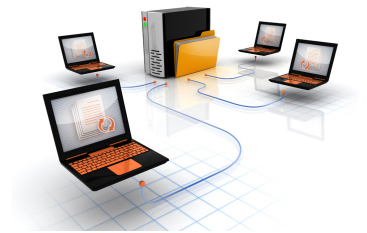
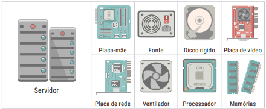
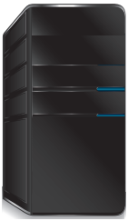
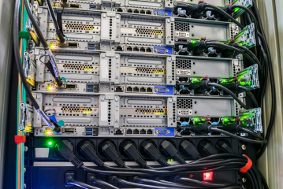
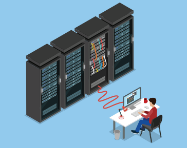
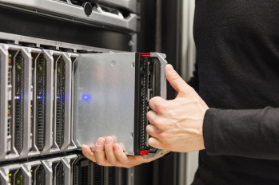

Servidor é um computador com sistema operacional específico e componentes dedicados para armazenar, gerenciar e compartilhar arquivos, dados, sistemas e recursos de hardware e software com outros computadores de uma rede. Ele centraliza serviços e melhora o desempenho, segurança, integridade e organização da infraestrutura de TI.

Algumas tarefas ou características a serem consideradas pela equipe de TI ao definir o uso de servidores na empresa são:
Compartilhamento e gerenciamento de arquivos: garante o acesso controlado a arquivos centralizados, reduzindo redundância e melhorando a organização.
Serviço de domínio: permite gerenciar autenticações, senhas, e-mails, permissões e grupos de usuários de forma centralizada.
Backup e armazenamento de dados: oferece cópias de segurança programadas, protegendo informações críticas contra falhas.
Acesso remoto: viabiliza o trabalho fora da empresa com segurança e praticidade.
Compartilhamento de aplicações: centraliza o uso de softwares como ERPs e CRMs, otimizando licenças e manutenção.
Gerenciamento de impressoras: organiza a fila de impressão e permite o controle de uso por usuário.
Redução de custos operacionais: diminui a necessidade de múltiplos computadores com software duplicado.
Redução de custos com manutenção: centraliza atualizações e suporte, simplificando a administração técnica.
Possibilita a virtualização: permite a execução de vários sistemas em um único hardware, otimizando recursos.
2. Tipos de servidor
Servidor de arquivos: armazena e compartilha documentos e arquivos, permitindo acesso simultâneo e controlado por permissões. Ideal para centralizar dados de trabalho.
Servidor de banco de dados: armazena grandes volumes de dados estruturados, como registros de clientes, vendas e produtos, com acesso rápido e seguro.
Servidor de e-mail: gerencia o envio e recebimento de mensagens com domínios próprios, usando protocolos como SMTP, POP3 e IMAP, garantindo comunicação eficiente.
Servidor de impressão: conecta e gerencia impressoras em rede, otimizando o uso, controle e manutenção desses periféricos.
Servidor web: hospeda páginas HTML e sistemas web, respondendo a requisições HTTP de navegadores dos clientes.
Servidor de aplicação: executa sistemas corporativos como ERP, CRM e outros aplicativos de missão crítica, garantindo segurança e disponibilidade.
Servidor DNS: traduz nomes de domínio (como www.exemplo.com) para endereços IP, permitindo que usuários acessem recursos da internet facilmente.
Servidor proxy: atua como intermediário entre os usuários e a internet, filtrando conteúdos e cacheando páginas para melhorar desempenho e segurança.
Servidor FTP: gerencia o envio e recebimento de arquivos entre máquinas pela rede, com autenticação e controle de permissões.
3. Componentes de um servidor

Placa-mãe: principal circuito que conecta todos os componentes internos, como processador, memória e discos.
Placa de rede: permite a comunicação do servidor com a rede, podendo ser de alta velocidade e redundante.
Processador (CPU): responsável por executar instruções. Pode ser multicore e com suporte a múltiplas threads.
Memória RAM: armazena dados temporários para uso imediato, quanto maior sua capacidade, maior a eficiência.
Disco rígido (HD/SSD): armazena os dados permanentemente. Sistemas RAID são comuns para redundância e desempenho.
4. Classificação de servidores
A forma de instalação e montagem física define as principais classificações de servidores:
4.1 Servidor torre

Formato similar ao de computadores desktop.
Fácil instalação, baixo ruído e consumo de energia.
Indicado para pequenas empresas ou escritórios.
Permite uso individual, sem necessidade de infraestrutura especializada.
Boa opção para ambientes com poucos usuários e sistemas simples.
4.2 Servidor rack

Projetado para ser montado em racks padronizados.
Permite melhor aproveitamento de espaço e organização.
Ideal para data centers e ambientes com múltiplos servidores.
Suporta maior número de discos e placas de expansão.
Necessita ambiente com controle de temperatura, ventilação e acesso restrito.

4.3 Servidor blade

Formato compacto em módulos que se encaixam em chassi blade.
Alta densidade e eficiência energética.
Ideal para empresas que precisam de alto desempenho em pouco espaço.
Oferece alta escalabilidade e centralização da refrigeração.
Demanda ambiente técnico controlado, com suporte à infraestrutura de energia e rede dedicada.
Veja o seguinte vídeo para melhor entendimento: link
5. Considerações finais
O servidor é um dos elementos mais importantes da infraestrutura de TI. Ele centraliza, protege e distribui os recursos e informações essenciais para o funcionamento da empresa.
A escolha do servidor deve considerar fatores como volume de dados, número de usuários, aplicações envolvidas e ambiente físico disponível. Com o crescimento das empresas, a tendência é a migração de servidores torre para rack ou blade, e posteriormente, a adoção de soluções em nuvem e virtualizadas.